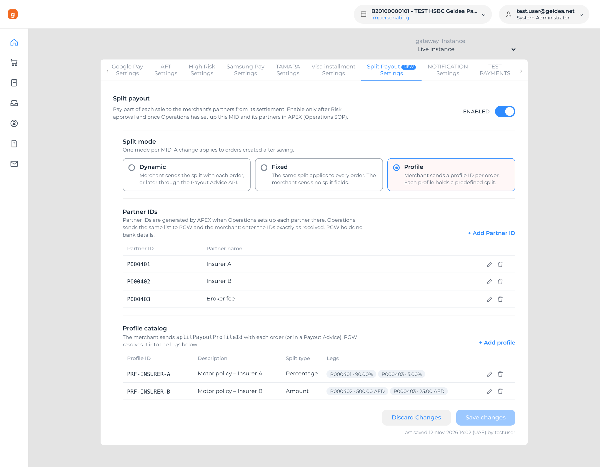
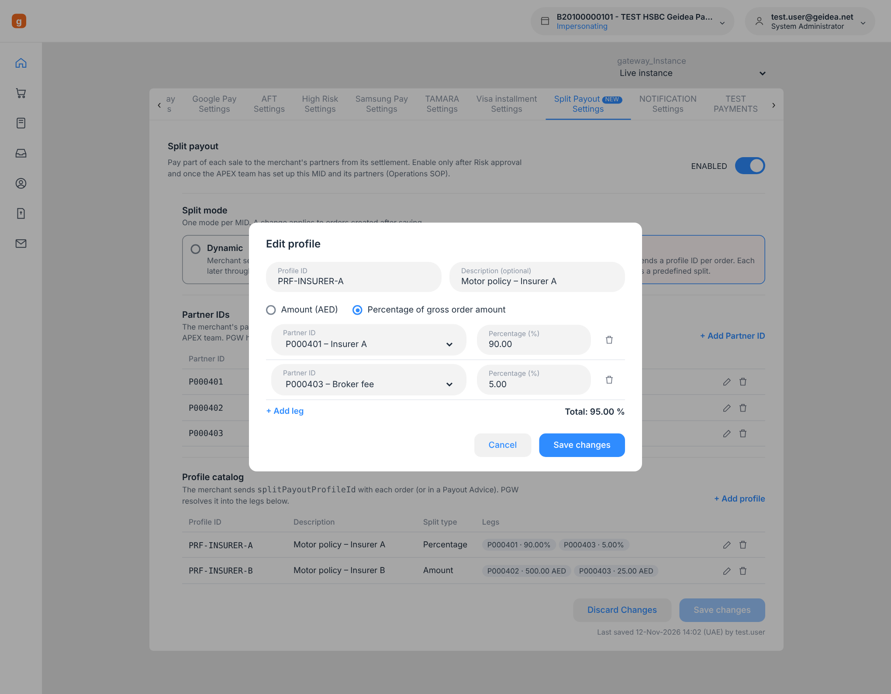
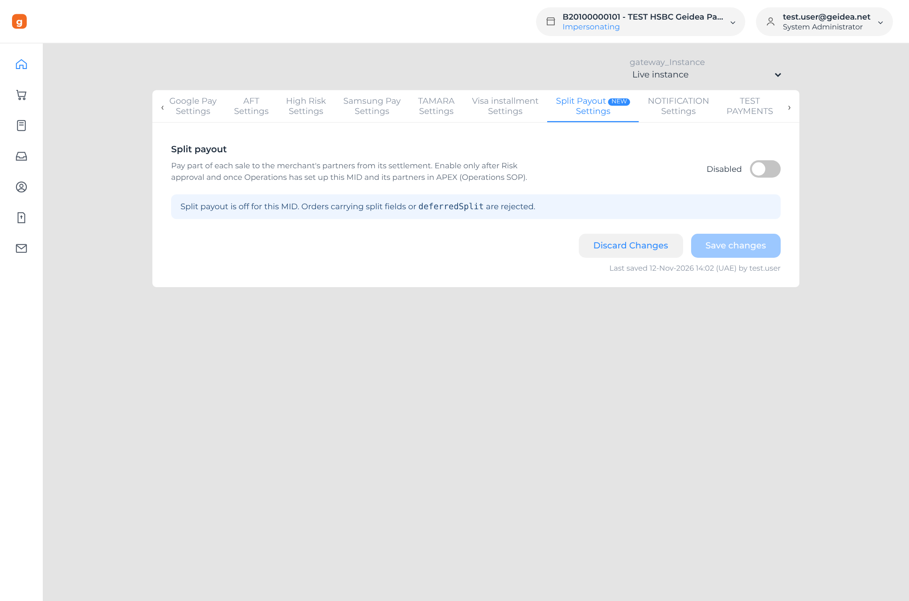
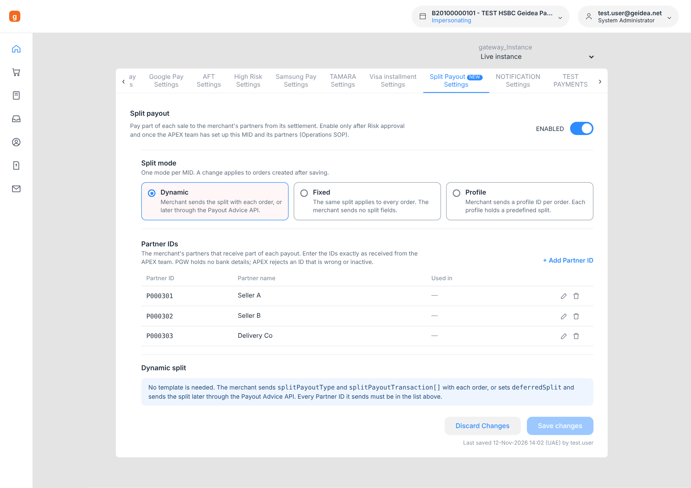
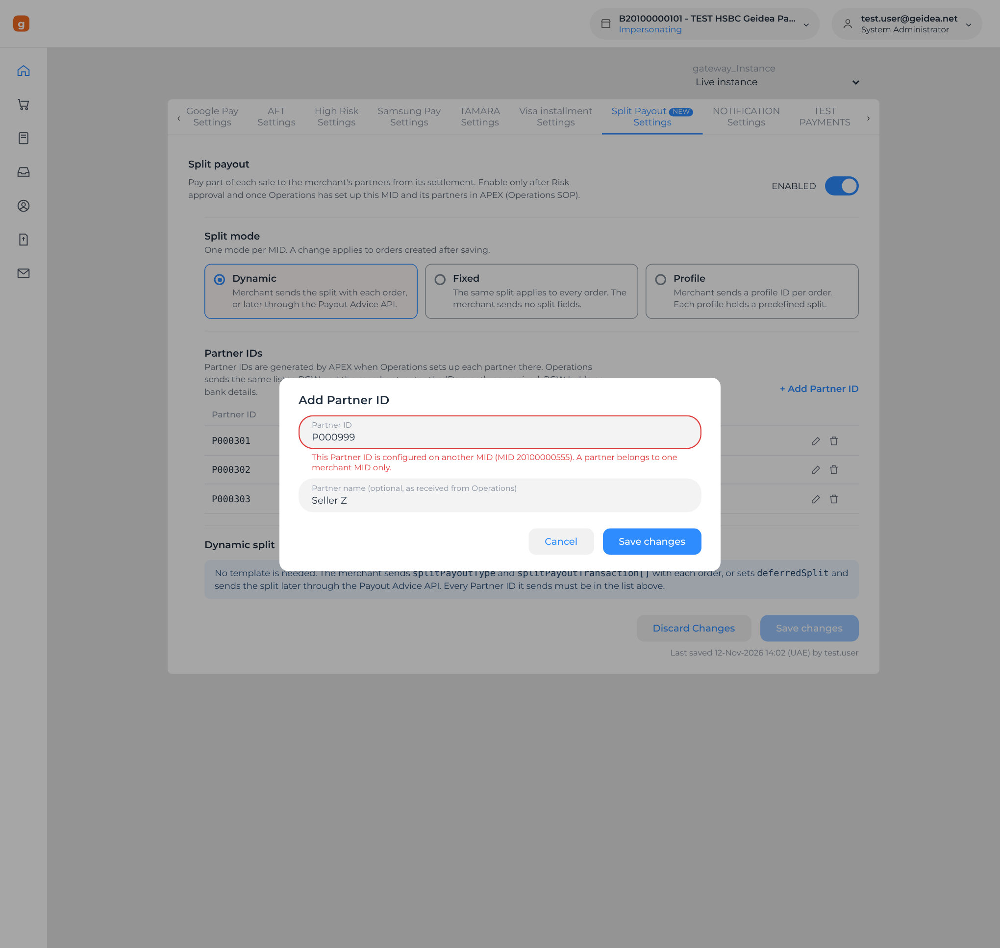
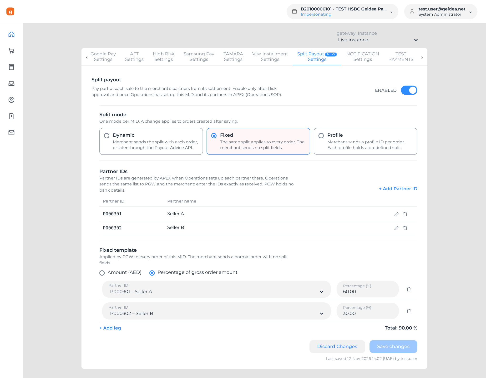
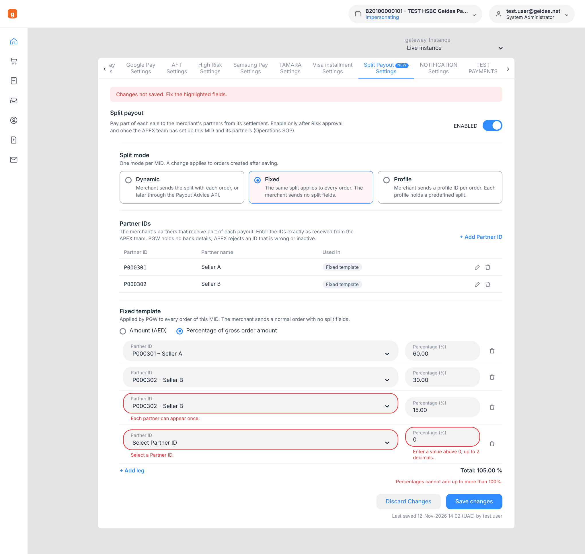

Version 0.5 draft · 17-Nov-2026 · Prepared by Ghulam Rabbani (Product)
Team: PGW (Sidra, Muhammad ElTabbakh)
These stories are the requirement. Each story can be read alone. A story refers to another story only for work that must be built first.
Story map
| # | Story | What it delivers | Depends on | Status |
|---|---|---|---|---|
| SP-1 | FE – Split payout configuration screen | The new tab in PGW Configuration as a screen the user can navigate. No save. | — | Written |
| SP-2 | BE – Split payout configuration setup | New settings on the product instance. Leg and profile limits. Partner ID search across MIDs. | — | Written |
| SP-3 | FE/BE – Enable split, Partner IDs and Dynamic mode | Turn split on and off, manage Partner IDs, select Dynamic. Save and checks. | SP-1, SP-2 | Written |
| SP-4 | FE/BE – Fixed mode | Fixed template. Save and checks. | SP-3 | Written |
| SP-5 | FE/BE – Profile mode | Profile catalog. Save and checks. | SP-3 | Written |
| SP-6 | BE – Create session with split payout | Split fields on Create Session. PGW checks and stores the split. Split flag to APEX. | SP-2 | Written (PTLF part waits on P4) |
| SP-7 | BE – APEX Payout Advice API integration | PGW sends each split to APEX. | SP-6, P3 | Waiting on Emcrey |
| SP-8 | BE – PGW Split Payout API | Merchant API to send a split later (NEW) or correct it (UPDATE). | SP-6, SP-7 | Written |
| SP-9 | BE – Day-end split advice file | All advices of the day to APEX after the midnight cut-off. | SP-7, P3 | Waiting on Emcrey |
Build order: SP-1 and SP-2 in parallel → SP-3 → SP-4, SP-5 → SP-6 → SP-8. SP-7 and SP-9 after P3.
Prerequisites (not PGW work)
| # | Item | Needed for | Owner |
|---|---|---|---|
| P1 | Risk approves the merchant for split payout. Operations onboards and screens each partner (Operations SOP). | Before a MID is set up (SP-3) | Risk (Manjunath), Operations (Nancy) |
| P2 | APEX enables split on the merchant MID, creates the partner definitions and shares the Partner IDs. | Before a MID is set up (SP-3) | APEX (Arul, Talha) |
| P3 | Emcrey shares the APEX Payout Advice API spec and the day-end advice file spec. | SP-7, SP-9 | APEX / Emcrey |
| P4 | Arul approves the PTLF spec with the split flag as field 49. | SP-6 (PTLF part) | Arul |
Rules for every story
Terms. Merchant = the Geidea merchant whose MID has split payout enabled. Partner = a business that the merchant shares its payout with (for example a seller on a marketplace). The merchant tells PGW how much each partner gets. APEX pays the partner from the merchant's settlement. A partner is defined in APEX. It is not a MID. Partner ID = the ID APEX gives to a partner. Leg = one line of a split: one Partner ID and its amount or percentage.
Field names. PGW field names are camelCase. Names in these stories are proposals. PGW engineering can rename them. Keep the meaning.
The PGW backend applies every rule, also when the screen already blocks the action.
Identify the merchant by MID in every API and in all documentation.
New fields in merchant APIs are additions. Do not change or remove existing fields.
Times are UAE time (UTC+4).
SP-1 — FE – Split payout configuration screen
Background
The PGW integration team sets merchant settings in the Backoffice: Merchants → Impersonate merchant → Payment Gateway → Configuration. Split payout needs a new tab there. This story builds the screen only. SP-3, SP-4 and SP-5 connect it to the backend.
Goal
The tab Split Payout Settings exists and the user can navigate all of it. Nothing is saved.
Story summary
| Item | Value |
|---|---|
| Story ID | SP-1 |
| Users | PGW integration team (Backoffice) |
| Depends on | — |
| Followed by | SP-3, SP-4, SP-5 |
| Out of scope | Save. Checks. Data from the backend. |
Requirements
1. Tab
Add the tab Split Payout Settings after Visa installment Settings and before NOTIFICATION Settings.
The gateway_Instance selector (Live / Test) applies, as on the other tabs.
Only Backoffice users who can open Payment Gateway Configuration see the tab. The merchant's own portal login does not show it.
2. Content of the tab
| # | Section | Shows | Component (existing example) |
|---|---|---|---|
| 2.1 | Split payout | Title, one-line description, ENABLED / Disabled toggle. When off, the tab shows nothing else. | Section with toggle (NOTIFICATION Settings) |
| 2.2 | Split mode | Shown when the toggle is on. Three tiles: Dynamic, Fixed, Profile, each with one line of text. One can be selected. | Bordered tiles (Gateway Settings: Payment methods) |
| 2.3 | Partner IDs | Shown when the toggle is on. Table: Partner ID, Partner name, Used in, edit and delete icons. Link + Add Partner ID. | Table with Add, edit, delete (Provider Settings: Provider Accounts) |
| 2.4 | Partner ID pop-up | Opens from + Add Partner ID and from edit. Fields: Partner ID, Partner name (optional). Buttons: Cancel, Save changes. On edit, Partner ID is read-only. | Pop-up (Provider Settings: Edit Account) |
| 2.5 | Fixed template | Shown when Fixed is selected. Split type radio: Amount (AED) / Percentage of gross order amount. One row per leg: Partner ID dropdown, value field, delete icon. Link + Add leg. Total below the rows. | Grey fields, dropdown (all tabs) |
| 2.6 | Profile catalog | Shown when Profile is selected. Table: Profile ID, Description, Split type, Legs, edit and delete icons. Link + Add profile. | Table with Add, edit, delete |
| 2.7 | Profile pop-up | Opens from + Add profile and from edit. Fields: Profile ID, Description (optional), split type radio, leg rows as in 2.5. Buttons: Cancel, Save changes. On edit, Profile ID is read-only. | Pop-up |
| 2.8 | Buttons | Discard Changes and Save changes at the bottom of the tab. | All tabs |
3. Behaviour in this story
The toggle, tiles and radios change what the tab shows, as in section 2.
In the pop-ups, Save changes adds or updates the row on the screen only. Cancel closes the pop-up.
+ Add leg adds an empty leg row. The delete icon removes a row from the screen.
The Partner ID dropdown in a leg lists the Partner IDs in the table (2.3).
+ Add leg is hidden when a template or profile has 10 legs. + Add profile is hidden when there are 10 profiles. (SP-2 makes these limits configurable. SP-4 and SP-5 read them.)
Save changes (2.8) does nothing in this story. Discard Changes clears all changes on the screen.
The tab does not read data from the backend. When opened, the toggle is off and the tables are empty.

Profile mode: the full tab

Profile pop-up
Acceptance criteria
The tab shows after Visa installment Settings in the Backoffice. A merchant portal login does not show it.
Toggle off: only the Split payout section shows. Toggle on: Split mode and Partner IDs show.
Fixed selected: Fixed template shows. Profile selected: Profile catalog shows. Dynamic selected: neither shows.
Add, edit and delete a Partner ID, a leg and a profile on the screen.
With 10 legs, + Add leg is hidden. With 10 profiles, + Add profile is hidden.
Save changes sends no request.
SP-2 — BE – Split payout configuration setup
Background
Merchant PGW settings are stored on the MID's PAYMENT_GATEWAY product instance, in its data object. The Configuration screen reads it with the existing product instance search and saves with the existing product instance update (PATCH /product/api/v1/productInstance/{productInstanceId}, JSON-Patch replace on data/<key>). The key isSplitPayoutEnabled already exists in data (value false). No screen uses it.
Goal
The product instance data holds all split payout settings.
The leg limit and the profile limit are system settings.
PGW can find if a Partner ID is already used on another MID.
Story summary
| Item | Value |
|---|---|
| Story ID | SP-2 |
| Depends on | — |
| Followed by | SP-3, SP-4, SP-5, SP-6 |
| Out of scope | Screen (SP-1). Save checks (SP-3 to SP-5). |
Requirements
1. Settings in data (PAYMENT_GATEWAY product instance, Live and Test separately)
| Field | Type | Default | Values |
|---|---|---|---|
| isSplitPayoutEnabled | Boolean | false | Existing key. true = split payout on. |
| splitPayoutMode | String | null | DYNAMIC / FIXED / PROFILE |
| splitPayoutPartners | Array | [] | Item: partnerId (String), partnerName (String, max 100, optional) |
| splitPayoutFixedTemplate | Object | null | splitType (String: AMOUNT / PERCENTAGE), legs (Array) |
| splitPayoutProfiles | Array | [] | Item: profileId (String), description (String, optional), splitType (String), legs (Array) |
Leg item: partnerId (String), value (Number, 2 decimals).
Existing MIDs: add the new fields with the defaults above. Do not change isSplitPayoutEnabled.
The existing product instance search returns the new fields. The existing product instance update accepts them.
partnerName is for the integration team only. Do not send it to the merchant or to APEX.
2. Limits (system settings, not per MID)
| Setting | Default | Meaning |
|---|---|---|
| Maximum legs per split | 10 | Applies to the Fixed template, each profile, and each split received in SP-6 and SP-8. |
| Maximum profiles per MID | 10 | Applies to splitPayoutProfiles. |
Store both as configuration. Do not write the values in code.
The Configuration screen can read both values.
3. Partner ID search
Input: Partner ID, instance (Live or Test).
Output: the MID that has this Partner ID in splitPayoutPartners, or none.
Compare without case.
Acceptance criteria
Product instance search for an existing MID returns the new fields with their defaults.
Update splitPayoutMode with the existing product instance update. The search returns the new value.
Change the leg limit to 5 in configuration. The screen reads 5.
Partner ID search returns the MID that has the ID, and none for an unused ID. Live and Test results are separate.
SP-3 — FE/BE – Enable split, Partner IDs and Dynamic mode
Background
SP-1 built the tab. SP-2 added the settings. This story connects them for the base settings that every mode needs: the split toggle, the split mode and the Partner IDs. With this story, a MID can be fully set up for Dynamic mode. In Dynamic mode the merchant sends the split with each order (SP-6) or later through the Split Payout API (SP-8). No template is needed.
Goal
The PGW integration team can turn split payout on for a MID, select a mode, add the merchant's Partner IDs and save. For Dynamic mode, the set-up is then complete.
Story summary
| Item | Value |
|---|---|
| Story ID | SP-3 |
| Users | PGW integration team (Backoffice) |
| Fields written | isSplitPayoutEnabled, splitPayoutMode, splitPayoutPartners |
| Save | Existing product instance update, as the other tabs |
| Depends on | SP-1, SP-2. Before a MID is set up: P1, P2. |
| Followed by | SP-4, SP-5 |
Requirements
1. Load
When the tab opens, show the saved values of the selected instance.
Show the Used in column of the Partner ID table from the saved Fixed template and profiles (SP-4, SP-5). Until those exist, show "—".
2. Split toggle
On → store isSplitPayoutEnabled = true. Off → false.
Turning the toggle off keeps the other settings stored. They are not applied while split is off.
3. Split mode
Store the selected tile in splitPayoutMode: DYNAMIC, FIXED or PROFILE.
When the mode changes, the template or profiles of the old mode stay stored. They are not applied. Show a note under the mode: "The Fixed template / profiles are stored but not applied in this mode."
4. Partner IDs
Add and edit in the pop-up. The pop-up checks the entry when the user clicks Save changes in the pop-up:
| # | Check | Message (under the field) |
|---|---|---|
| 4.1 | Partner ID has 3–20 letters, digits or hyphens. Remove spaces at start and end. | Use 3–20 letters, digits or hyphens. |
| 4.2 | Partner ID is not already in the table. Compare without case. | This Partner ID is already in the list. |
| 4.3 | Partner ID is not on another MID of the same instance (SP-2 search). | This Partner ID is configured on another MID (MID nnnnnnnnnnn). A partner belongs to one merchant MID only. |
| 4.4 | Partner name: maximum 100 characters. | Use up to 100 characters. |
Delete from the table:
| # | Check | Message |
|---|---|---|
| 4.5 | The Partner ID is not used in the Fixed template or in a profile. | P000301 is used in Fixed template. Remove it there first. |
Why 4.3. APEX links each partner to one merchant MID. A Partner ID on a second MID makes APEX reject every split from that MID after the customer has paid.
Note 4.1 is a placeholder until the Partner ID convention is agreed (open point 1).
5. Save
On Save changes (bottom of the tab):
| # | Check | Message |
|---|---|---|
| 5.1 | Split on → a mode is selected. | Select a split mode. |
| 5.2 | Split on → at least one Partner ID. | Add at least one Partner ID. |
Any failure: do not save. Show the message under the section and the banner "Changes not saved. Fix the highlighted fields."
No failure: save the changed fields with the existing product instance update.
After a successful save, use the saved values as the new starting point for Save changes and Discard Changes. Example: turn split off, save, turn it on, save again → the second save stores true.
Save changes is off when nothing changed. Discard Changes returns to the last saved values.
6. Effect of a saved change
| Change | Effect |
|---|---|
| Split turned off | New sessions with split fields are rejected (SP-6). Split Payout API calls are rejected (SP-8). Orders already flagged stay flagged; APEX releases them after N days. Operations also turns split off in APEX. |
| Partner ID deleted | New sessions and API calls with this ID are rejected. Splits already sent to APEX do not change. |
| Any other change | Applies to sessions created after the save. |

Split payout off

Dynamic mode with Partner IDs

Add Partner ID blocked by 4.3
Acceptance criteria
Open the tab on a new MID: split off, no mode, no Partner IDs.
Turn split on, save without a mode: message 5.1. Nothing is saved.
Select Dynamic, save without a Partner ID: message 5.2.
Add P000301, then add p000301: message 4.2.
Add an ID that is on another MID: message 4.3 with that MID.
Select Dynamic, add two Partner IDs, save, reload: values are shown.
Turn split off, save, turn split on, save, reload: split is on.
Change on the Test instance: the Live instance does not change.
SP-4 — FE/BE – Fixed mode
Background
In Fixed mode the merchant sends a normal order with no split fields. PGW applies the same split to every order of the MID. The integration team sets this split once, as the Fixed template. SP-3 is in place: split is on and Partner IDs exist.
Goal
The PGW integration team can set and save the Fixed template. With this story, a MID can be fully set up for Fixed mode.
Story summary
| Item | Value |
|---|---|
| Story ID | SP-4 |
| Users | PGW integration team (Backoffice) |
| Fields written | splitPayoutFixedTemplate (splitType, legs[] with partnerId, value) |
| Save | Existing product instance update |
| Depends on | SP-3 |
| Followed by | SP-6 (applies the template to each order) |
Requirements
1. Template
Split type: Amount (AED) → AMOUNT. Percentage of gross order amount → PERCENTAGE. One type for all legs.
Each leg: Partner ID from the MID's Partner IDs, and a value.
Show the total of all legs below the rows.
2. Checks on Save changes
These checks apply when splitPayoutMode = FIXED.
| # | Check | Message (under the leg or the total) |
|---|---|---|
| 2.1 | At least one leg. | Add at least one leg. |
| 2.2 | Each leg has a Partner ID. | Select a Partner ID. |
| 2.3 | Each Partner ID occurs once in the template. | Each partner can appear once. |
| 2.4 | Each value is above 0, with up to 2 decimals. | Enter a value above 0, up to 2 decimals. |
| 2.5 | Number of legs ≤ maximum legs (SP-2, default 10). At the maximum, hide + Add leg. | Maximum 10 legs. |
| 2.6 | Split type PERCENTAGE: total ≤ 100. | Percentages cannot add up to more than 100%. |
Any failure: do not save. Show the banner "Changes not saved. Fix the highlighted fields."
No failure: save splitPayoutFixedTemplate with the existing product instance update. Save and discard work as in SP-3 section 5.
For AMOUNT, do not check the total at setup. The order amount is not known. SP-6 rejects an order when the legs add up to more than the order amount.
3. Effect
A saved template applies to sessions created after the save.
Partner IDs used in the template show "Fixed template" in the Used in column. They cannot be deleted (SP-3 check 4.5).
4. Example
Template: PERCENTAGE, P000301 = 60, P000302 = 30. Order AED 200. PGW sends to APEX: P000301 60%, P000302 30% (SP-6, SP-7). APEX pays them from the merchant's net. The merchant keeps the rest.
"splitPayoutFixedTemplate": {
"splitType": "PERCENTAGE",
"legs": [ { "partnerId": "P000301", "value": 60.00 },
{ "partnerId": "P000302", "value": 30.00 } ] }

Fixed template

Save blocked by 2.3, 2.2, 2.4 and 2.6
Acceptance criteria
Fixed, PERCENTAGE, 60 + 30: saved. Reload shows the template.
60 + 30 + 15: message 2.6.
Same Partner ID in two legs: message 2.3.
Leg with value 0: message 2.4.
10 legs: + Add leg is hidden.
Delete a Partner ID used in the template: message "P000301 is used in Fixed template. Remove it there first."
SP-5 — FE/BE – Profile mode
Background
In Profile mode the merchant sends a profile ID with each order. Each profile holds a split that the integration team sets up front. Example: an insurance aggregator with one profile per insurer. SP-3 is in place: split is on and Partner IDs exist.
Goal
The PGW integration team can add, edit, delete and save profiles. With this story, a MID can be fully set up for Profile mode.
Story summary
| Item | Value |
|---|---|
| Story ID | SP-5 |
| Users | PGW integration team (Backoffice) |
| Fields written | splitPayoutProfiles[] (profileId, description, splitType, legs[]) |
| Save | Existing product instance update |
| Depends on | SP-3 |
| Followed by | SP-6, SP-8 (apply the profile the merchant sends) |
Requirements
1. Profile pop-up
Fields: Profile ID, Description (optional), split type (Amount (AED) / Percentage of gross order amount), legs (Partner ID and value). The pop-up checks the profile when the user clicks Save changes in the pop-up:
| # | Check | Message |
|---|---|---|
| 1.1 | Profile ID has 1–50 letters, digits, hyphens or underscores. | Use 1–50 letters, digits, hyphens or underscores. |
| 1.2 | Profile ID is not used by another profile of this MID. Compare without case. | This profile ID already exists for this MID. |
| 1.3 | At least one leg. | Add at least one leg. |
| 1.4 | Each leg has a Partner ID. | Select a Partner ID. |
| 1.5 | Each Partner ID occurs once in the profile. | Each partner can appear once. |
| 1.6 | Each value is above 0, with up to 2 decimals. | Enter a value above 0, up to 2 decimals. |
| 1.7 | Number of legs ≤ maximum legs (SP-2, default 10). At the maximum, hide + Add leg. | Maximum 10 legs. |
| 1.8 | Split type PERCENTAGE: total ≤ 100. | Percentages cannot add up to more than 100%. |
On edit, Profile ID is read-only. To change an ID, delete the profile and add a new one.
The pop-up Save changes updates the table on the screen only.
2. Checks on Save changes (bottom of the tab)
| # | Check | Message |
|---|---|---|
| 2.1 | Mode PROFILE: at least one profile. | Add at least one profile. |
| 2.2 | Number of profiles ≤ maximum profiles (SP-2, default 10). At the maximum, hide + Add profile. | Maximum 10 profiles. |
Any failure: do not save. Show the banner "Changes not saved. Fix the highlighted fields."
No failure: save splitPayoutProfiles with the existing product instance update. Save and discard work as in SP-3 section 5.
For AMOUNT profiles, do not check the total at setup. SP-6 rejects an order when the legs add up to more than the order amount.
3. Effect
Saved profiles apply to sessions and API calls after the save.
A deleted profile: new sessions with this profile ID are rejected (SP-6).
Partner IDs used in a profile show the profile ID in the Used in column. They cannot be deleted (SP-3 check 4.5).
4. Example
"splitPayoutProfiles": [
{ "profileId": "PRF-INSURER-A", "description": "Motor policy - Insurer A",
"splitType": "PERCENTAGE",
"legs": [ { "partnerId": "P000401", "value": 90.00 },
{ "partnerId": "P000403", "value": 5.00 } ] },
{ "profileId": "PRF-INSURER-B", "description": "Motor policy - Insurer B",
"splitType": "AMOUNT",
"legs": [ { "partnerId": "P000402", "value": 500.00 },
{ "partnerId": "P000403", "value": 25.00 } ] } ]
Profile catalog
Profile pop-up
Acceptance criteria
Add the two profiles in the example, save, reload: both are shown.
Add a profile with ID prf-insurer-a: message 1.2.
Profile with percentages 90 + 15: message 1.8.
Mode Profile with no profile, save: message 2.1.
10 profiles: + Add profile is hidden.
SP-6 — BE – Create session with split payout
Background
A merchant starts every payment with Create Session (POST /payment-intent/api/v2/direct/session). This covers the hosted payment page, the Direct API, and token CIT and MIT. The session becomes the order. For split payout, PGW must know the split of each order and tell APEX that the transaction is a split transaction. APEX then holds the settlement until it receives the split (SP-7). The PGW order already has the field splitPayoutTransaction (empty today).
Goal
A merchant with split payout on can send the split, a profile ID, or deferredSplit with Create Session.
PGW checks the split before payment and rejects a wrong request.
PGW stores the split on the order and returns it in order inquiry and callback.
PGW sends the split flag to APEX with each successful split transaction.
Story summary
| Item | Value |
|---|---|
| Story ID | SP-6 |
| Geidea endpoint | POST /payment-intent/api/v2/direct/session (HPP, Direct API, CIT, MIT) |
| Settings read | isSplitPayoutEnabled, splitPayoutMode, splitPayoutPartners, splitPayoutFixedTemplate, splitPayoutProfiles, maximum legs (SP-2) |
| Order fields written | splitPayout, deferredSplit, splitPayoutType, splitPayoutProfileId, splitPayoutTransaction[] |
| APEX | createTransaction federation: new field splitPayout. PTLF: field 49 (waits on P4). |
| Depends on | SP-2. A MID set up with SP-3 to SP-5. |
| Followed by | SP-7, SP-8 |
| Out of scope | Sending the split to APEX (SP-7). Split after payment (SP-8). Pay by Link. Drop-in session v1. Refunds (no change: debited from the merchant as today). |
Requirements
1. New request fields (Create Session)
| Field | Type | M/O/C | Mode | Rule |
|---|---|---|---|---|
| splitPayoutType | String | C – M when splitPayoutTransaction is sent | Dynamic | AMOUNT or PERCENTAGE. One type for all legs. |
| splitPayoutTransaction | Array | O | Dynamic | One item per leg. |
| splitPayoutTransaction[].partnerId | String | M | Dynamic | A Partner ID of the MID |
| splitPayoutTransaction[].value | Number | M | Dynamic | Above 0, up to 2 decimals. AED for AMOUNT. Percent of the order amount for PERCENTAGE. |
| splitPayoutTransaction[].reference | String | O | Dynamic | Merchant's reference for the leg. Max 50. |
| splitPayoutTransaction[].description | String | O | Dynamic | Free text. Max 100. |
| splitPayoutProfileId | String | O | Profile | A profile ID of the MID |
| deferredSplit | Boolean | O | Dynamic, Profile | true = the merchant sends the split later with the Split Payout API (SP-8). |
Fixed mode: the merchant sends no split fields. PGW applies the Fixed template.
An empty splitPayoutTransaction array counts as not sent.
2. What PGW does with each request
| # | MID setting | Request | PGW action | splitPayout on the order |
|---|---|---|---|---|
| 2.1 | Split off | No split fields | Normal session | false |
| 2.2 | Split off | Any split field or deferredSplit | Reject | — |
| 2.3 | Dynamic | splitPayoutTransaction | Check (section 3). Store the legs. | true |
| 2.4 | Dynamic | deferredSplit = true, no legs | Store deferredSplit = true. No legs. | true |
| 2.5 | Dynamic | No split fields, no deferredSplit | Normal session. No split. | false |
| 2.6 | Fixed | No split fields | Copy the Fixed template legs to the order. Check the amount (3.6). | true |
| 2.7 | Fixed | Any split field or deferredSplit | Reject | — |
| 2.8 | Profile | splitPayoutProfileId | Copy the profile legs to the order. Check (section 3). | true |
| 2.9 | Profile | deferredSplit = true, no profile ID | Store deferredSplit = true. | true |
| 2.10 | Profile | splitPayoutTransaction | Reject | — |
| 2.11 | Any | Split detail or profile ID and deferredSplit = true | Reject | — |
3. Checks before payment
Any failure rejects the session (HTTP 400). PGW engineering sets the error codes.
| # | Check | Message |
|---|---|---|
| 3.1 | Split fields are allowed for this MID and mode (section 2). | Split payout is not enabled for this merchant. / Split fields do not match the merchant's split mode. |
| 3.2 | paymentOperation = Pay. | Split payout is supported for Pay only. |
| 3.3 | Order currency = AED. | Split payout is supported in AED only. |
| 3.4 | Each partnerId is a Partner ID of the MID. Each occurs once. | Unknown partner ID: {id}. / Duplicate partner ID: {id}. |
| 3.5 | Number of legs ≤ maximum legs (SP-2). | Maximum {n} legs. |
| 3.6 | AMOUNT: total of legs ≤ order amount. PERCENTAGE: total ≤ 100. | Split total is more than the order amount. / Split total is more than 100%. |
| 3.7 | Each value is above 0, up to 2 decimals. | Invalid split value. |
| 3.8 | splitPayoutProfileId is a profile of the MID. | Unknown split profile: {id}. |
| 3.9 | Not split detail and deferredSplit together. | Send split detail or deferredSplit, not both. |
Why 3.2. In this release APEX handles split only on a sale. Authorize and capture are not included.
4. Store on the order
| Order field | Type | Value |
|---|---|---|
| splitPayout | Boolean | true when the order is a split order (section 2). Not a request field. |
| deferredSplit | Boolean | From the request. Default false. |
| splitPayoutType | String | AMOUNT / PERCENTAGE. From the request, template or profile. null when deferred. |
| splitPayoutProfileId | String | From the request. null otherwise. |
| splitPayoutTransaction[] | Array | Legs: partnerId, value, reference, description. Existing field. |
Store the split as it is at session creation. A later change to the MID settings does not change the order.
Do not convert percentages to amounts. APEX converts them on the gross amount.
5. Return to the merchant
Return the fields of section 4 in:
Order inquiry GET /pgw/api/v1/direct/order/{orderId} and GET /pgw/api/v1/direct/order?MerchantReferenceId=.
The callback to callbackUrl.
The pay responses (/pgw/api/v2/direct/pay, /pgw/api/v2/direct/pay/token).
6. Split flag to APEX
When PGW federates a successful Pay transaction of an order with splitPayout = true, send splitPayout = Y in createTransaction. Add the field at the end of the payload.
For all other transactions send splitPayout = N.
PTLF: send the same value as field 49 (waits on P4).
Why. APEX holds a transaction with splitPayout = Y until it receives a valid split. If PGW does not send the split, APEX releases the money to the merchant after N days. Without the flag, APEX pays the merchant the next day and the partners' money stays with the merchant.
7. Example (Dynamic, amount split)
{
"amount": 1000.00,
"currency": "AED",
"merchantReferenceId": "ORD-DEMO-1000",
"paymentOperation": "Pay",
"timestamp": "...", "signature": "...", "callbackUrl": "...",
"splitPayoutType": "AMOUNT",
"splitPayoutTransaction": [
{ "partnerId": "P000301", "value": 600.00, "reference": "SELLER-A" },
{ "partnerId": "P000302", "value": 300.00, "reference": "SELLER-B" },
{ "partnerId": "P000303", "value": 100.00, "reference": "DELIVERY" }
]
}
Profile: send "splitPayoutProfileId": "PRF-INSURER-A". Deferred: send "deferredSplit": true. Fixed: send no split fields.
Acceptance criteria
Dynamic MID, the example above: session created. Order inquiry returns splitPayout = true and the three legs.
Same request on a MID with split off: rejected (3.1).
Legs total AED 1,001 on an AED 1,000 order: rejected (3.6).
Unknown Partner ID: rejected (3.4).
paymentOperation = PreAuthorize with split: rejected (3.2).
Fixed MID, order with no split fields: order has the template legs.
Profile MID, splitPayoutProfileId = PRF-INSURER-A: order has the profile legs. Unknown profile: rejected (3.8).
deferredSplit = true: order has splitPayout = true and no legs.
Split detail and deferredSplit together: rejected (3.9).
Successful split payment: createTransaction has splitPayout = Y. Normal payment: N.
Change the Fixed template after a session: the order keeps the old legs.
SP-7 — BE – APEX Payout Advice API integration (waiting on Emcrey, P3)
Background
APEX holds a split transaction until it receives the split (the "advice"). APEX provides a Payout Advice API. PGW must send each split to this API. The API spec is not final yet. This story gives the requirement from the agreed APEX requirement (Arul, 11-Nov-2026). Field names follow the APEX draft and can change with the final spec.
Goal
PGW sends the split of each successful split order to APEX.
PGW sends new and updated splits from the Split Payout API (SP-8).
PGW keeps the status of each advice.
Story summary
| Item | Value |
|---|---|
| Story ID | SP-7 |
| APEX API used | Payout Advice API (spec from Emcrey, P3) |
| Depends on | SP-6, P3 |
| Followed by | SP-8, SP-9 |
Requirements
1. When PGW sends an advice
| # | Trigger | Action |
|---|---|---|
| 1.1 | Pay succeeds on an order with legs in splitPayoutTransaction (Dynamic, Fixed, Profile) | Send action A (create) |
| 1.2 | SP-8 accepts a NEW | Send action A |
| 1.3 | SP-8 accepts an UPDATE | Send action U (replace the whole advice) |
Orders with deferredSplit = true and no legs: send nothing until SP-8.
2. Content (APEX draft)
| APEX field | PGW source |
|---|---|
| Action | A or U |
| Merchant | MID |
| TransactionReference | interSystemID of the Pay transaction |
| SplitRules[].PartnerID | splitPayoutTransaction[].partnerId |
| SplitRules[].Percentage | value when splitPayoutType = PERCENTAGE. Else empty. |
| SplitRules[].Amount | value when splitPayoutType = AMOUNT. Else empty. |
Send percentage or amount, never both.
3. Advice record on the order
| Field | Values |
|---|---|
| splitAdviceId | Generated by PGW at the first advice of the order. A new ID for each UPDATE. |
| splitAdviceStatus | PENDING (not sent yet), SENT, ACCEPTED, REJECTED |
| splitAdviceReason | APEX reason code and text when REJECTED |
4. Errors and retry
APEX not reachable or timeout: keep PENDING and retry. Retry count and interval: PGW engineering. The day-end file (SP-9) carries the advice in any case.
APEX rejects: store REJECTED and the reason. The merchant can correct it with an UPDATE (SP-8).
A failure here never changes the payment result.
Acceptance criteria
To be completed when P3 is received.
SP-8 — BE – PGW Split Payout API
Background
Some merchants do not know the split when the customer pays. They create the session with deferredSplit = true (SP-6) and send the split later. A merchant can also correct a split that APEX rejected. This story adds a merchant API for both. PGW checks the request and sends it to APEX (SP-7).
Goal
The merchant can send the split of a paid order (NEW).
The merchant can replace the split of an order (UPDATE).
PGW returns the result at once and sends the advice to APEX.
Story summary
| Item | Value |
|---|---|
| Story ID | SP-8 |
| Geidea endpoint | New. Name and path: PGW engineering (e.g. POST /pgw/api/v1/direct/splitPayout). Same authentication as the other Direct API calls. |
| Modes | Dynamic and Profile. Fixed MIDs are rejected (the template applies). |
| Depends on | SP-6, SP-7 |
| Out of scope | Split inquiry API (later, with the Merchant Portal view). |
Requirements
1. Request
| Field | Type | M/O/C | Rule |
|---|---|---|---|
| action | String | M | NEW or UPDATE |
| orderId | String | M | PGW order ID |
| splitAdviceId | String | C – M for UPDATE | The latest advice ID of the order |
| splitPayoutType | String | C – M for Dynamic | AMOUNT / PERCENTAGE |
| splitPayoutTransaction[] | Array | C – M for Dynamic | Same as SP-6: partnerId, value, reference, description |
| splitPayoutProfileId | String | C – M for Profile | A profile of the MID |
The request always carries the full split, never one leg.
2. Checks
Any failure: reject (HTTP 400) with the message. PGW engineering sets the error codes.
| # | Check | Message |
|---|---|---|
| 2.1 | Split is on for the MID. Mode is Dynamic or Profile. | Split payout is not enabled for this merchant. / Not allowed for Fixed split. |
| 2.2 | The order exists, belongs to the calling MID and has a successful Pay. | Order not found. / Order is not paid. |
| 2.3 | The order has splitPayout = true. | Order is not a split order. |
| 2.4 | NEW: the order has deferredSplit = true and no advice yet. | A split already exists for this order. Use UPDATE. |
| 2.5 | UPDATE: splitAdviceId is the latest advice ID of the order. | Advice ID is not the latest. |
| 2.6 | The split passes the SP-6 checks 3.4 to 3.8 (Partner IDs, legs limit, totals, values, profile). | As in SP-6. |
Why 2.3. An order without the flag was not held by APEX. Its money may already be paid to the merchant.
Why 2.5. A late retry of an old request must not overwrite a newer correction.
3. Processing
Repeat of the same NEW with the same content: return the first splitAdviceId. Do not create a second advice.
Store the split on the order (fields as in SP-6 section 4). For UPDATE, replace the legs.
Send to APEX with SP-7 (NEW → A, UPDATE → U).
APEX accepts U only while the advice is not yet processed or released. APEX rejects it after that. Return the APEX reason.
4. Response
| Field | Value |
|---|---|
| splitAdviceId | New advice ID |
| splitAdviceStatus | ACCEPTED or REJECTED (from APEX) or PENDING (APEX not reached) |
| reasonCode, reasonMessage | When rejected |
The final payout result reaches the merchant in the APEX split payout report.
5. Example
{
"action": "NEW",
"orderId": "a1b2c3d4-...",
"splitPayoutType": "PERCENTAGE",
"splitPayoutTransaction": [
{ "partnerId": "P000301", "value": 60.00 },
{ "partnerId": "P000302", "value": 30.00 } ]
}
Acceptance criteria
Order created with deferredSplit = true and paid: NEW accepted. Advice ID returned.
NEW on an order that already has a split: rejected (2.4).
UPDATE with an older advice ID: rejected (2.5).
NEW on an order without the split flag: rejected (2.3).
Call on a Fixed MID: rejected (2.1).
Same NEW sent twice: same advice ID.
SP-9 — BE – Day-end split advice file (waiting on Emcrey, P3)
Background
APEX uses a day-end file as a backup to the real-time API, the same way as transaction federation today. If an advice is lost on the API, the file carries it. If the file and the API differ, the file wins.
Goal
PGW sends APEX one file each day with all advices of the day.
Story summary
| Item | Value |
|---|---|
| Story ID | SP-9 |
| Depends on | SP-7, P3 (file format) |
Requirements
Send the file after the Ecomm cut-off (midnight, UAE time), for the day that ended.
Include every advice created or updated that day, in its latest state (action A or U).
Add a trailer with the number of records.
On a day with no advices, send an empty file with a record count of 0.
File name, format, delivery path: from P3.
Acceptance criteria
To be completed when P3 is received.
Open points
| # | Point | Story | Owner / status |
|---|---|---|---|
| 1 | Partner ID convention: who issues it (PGW, Operations or APEX) and its format. MA must be able to use the same convention later. | SP-3 | Rabbani – parked |
| 2 | Where isSplitPayoutEnabled and the order field splitPayoutTransaction come from, and what reads them today. | SP-2, SP-6 | PGW engineering |
| 3 | Partner ID search across MIDs: confirm it is possible on product instance data. | SP-2 | PGW engineering |
| 4 | The tab is in Merchant Portal Backoffice (owner: MA team). Confirm the PGW team builds it, as for Pay by Bank settings. | SP-1 | Rabbani with Emir / Derya |
| 5 | Are all three modes in the first build, or Dynamic first? | SP-3 to SP-5 | Rabbani |
| 6 | After a mode change: how an UPDATE is checked for an order created in the old mode. | SP-8 | Rabbani |
| 7 | Pay by Link with split payout. | SP-6 | Later |